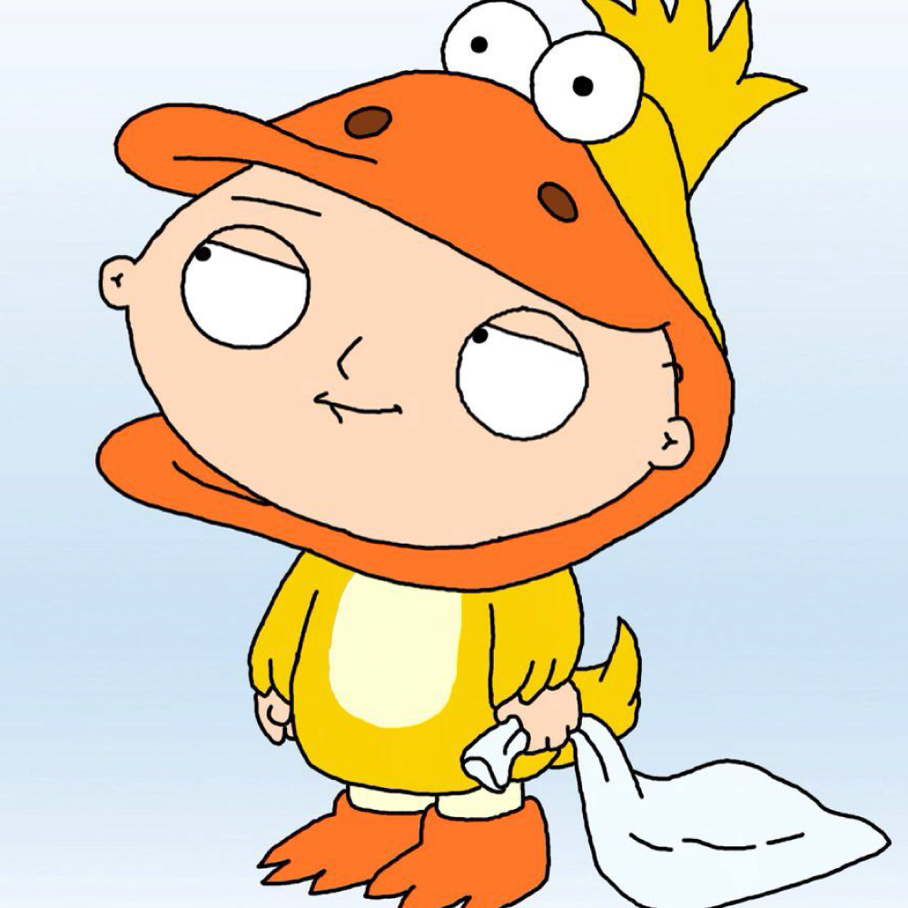

Stewie Griffin is a character in the popular animated television show, "Family Guy". He is the youngest member of the Griffin family, and is known for his sharp wit, British accent, and diabolical plans. Despite his infantile appearance, Stewie is actually a highly intelligent and articulate character. He has a love for science and technology, and is often seen inventing new gadgets or building elaborate contraptions. He also has a passion for music and is shown playing the piano on several occasions. Stewie is known for his desire for world domination, and often creates elaborate plans to achieve this goal. He has a deep-seated hatred for his mother Lois, and frequently attempts to kill her or make her miserable. He also has a complex relationship with his father Peter, and often seeks his approval and attention. One of Stewie's most defining characteristics is his sexuality. Despite being a baby, Stewie has been shown to have homosexual tendencies and is often attracted to other male characters in the show. This has led to several hilarious and controversial moments throughout the series.  In terms of appearance, Stewie is a short, chubby baby with blond hair and a distinctive football-shaped head. He is often seen wearing a red jumpsuit and black shoes, and is rarely seen without his teddy bear, Rupert. Despite his evil intentions, Stewie is also a very lovable character. He has a quick wit and a sharp tongue, and is often the source of some of the show's funniest moments. He is also shown to have a softer side, and has been known to show affection towards his family and friends. Throughout the show, Stewie goes through many challenges and struggles, but he always manages to come out on top. Whether he's trying to take over the world, build a time machine, or just survive another day with his dysfunctional family, Stewie is a character that audiences can't help but love. Overall, Stewie Griffin is a complex and multifaceted character who embodies the contradictions and absurdities of modern life. He is both evil and lovable, intelligent and naive, and his antics never fail to entertain audiences. While he may never achieve his goal of world domination, he will always hold a special place in the hearts of "Family Guy" fans around the world.